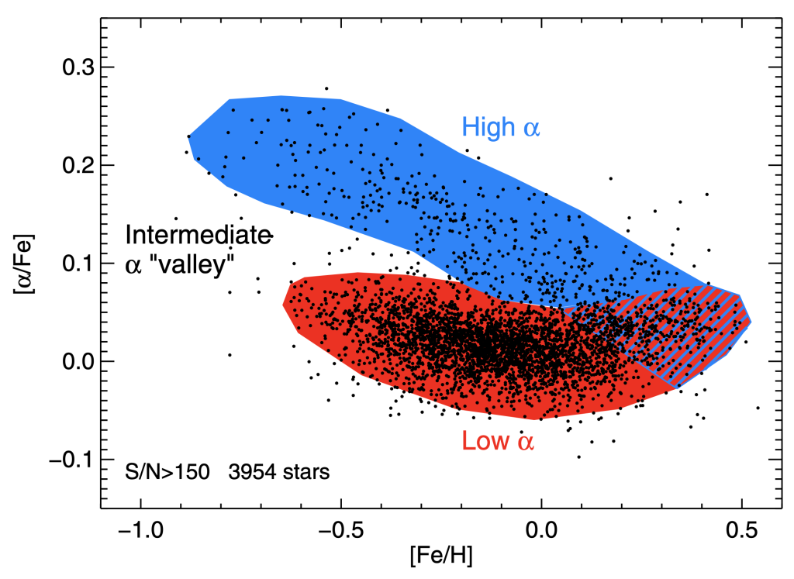
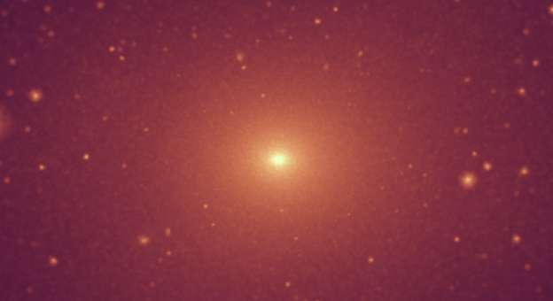

Ph.D. Candidate • UC Davis, Dept. of Physics & Astronomy Investigating element abundance evolution in Milky Way-mass galaxies mlbarry (at) ucdavis.edu
About Me
I am a fourth-year Ph. D. candidate in the Department of Physics and Astronomy at UC Davis, working with Dr. Andrew Wetzel to study the distribution of dark matter subhalos around the Milky Way using the FIRE simulations.
I earned my B. S. in Physics from UC Santa Barbara in 2013, and my M. S. in Physics from CSU Long Beach in 2020. I also worked seasonally as a museum guide at Griffith Observatory in Los Angeles from 2012-2020.
I am interested in using computers to learn about the natural history of the universe at all scales. This includes the evolutionary history of life on earth, the structure and evolution of stars and planets, and how the nature of the universe as a whole determines these evolutionary pathways.
Current Research
Alpha Element Bimodality:
Examining element abundance patterns in MW-mass galaxy simulations
PI: Dr. Andrew Wetzel @ UC Davis
Stars in the Milky Way exhibit a bimodal distribution in their relative abundances of the alpha elements. Of the several dozen Milky Way-mass hosts in the FIRE simulations, five display a similar bimodality in alpha abundance. I am currently studying these five simulations in order to explain what drives this similarity to the MW.

Observed bimodality in alpha element abundances in the Milky Way from APOGEE (Nidever 2014)
The nature of dark matter is currently unknown. One method of constraining its properties is to determine the lower mass limit of the gravitationally bound ‘clumps’ it can form—a quantity determined by the particle properties of dark matter. Some of these clumps, known as “subhalos” of a galaxy’s primary dark matter halo, have been observed as components of small, satellite galaxies. Some particle models of dark matter predict these to be the smallest possible subhalos; others predict even smaller subhaloes that contain no stars, making them difficult to detect. To support observational campaigns to detect these nonluminous objects, I examined Milky Way-mass galaxies in the FIRE simulations to set expectations for dark subhalo populations within CDM. I also used our results to demonstrate that the LMC’s recent close pass has likely enriched the inner galaxy with extra subhalos.

Visualization of dark matter distribution in one of the FIRE simulations (m12i), with the Milky Way-mass galaxy halo at the center (Garrison-Kimmel 2017)
The field of seismology describes how various types of oscillations travel through the Earth. It is predicted that similar oscillations occur in neutron stars, and that the frequency of these oscillations is related to the stars’ composition. At CSU Long Beach, I studied under Dr. Prashanth Jaikumar to complete my Master’s thesis on g-modes, oscillations that occur as equilibrium is restored to a displaced fluid parcel within the star. We found that neutron stars with a quark core had noticeably higher g-mode frequencies, offering a diagnostic for the presence of a quark-hadron phase transition. This research was sponsored by a grant from the National Science Foundation.
Fermion Thermodynamics:
Investigating Alternate Distribution Functions
PI: Dr. Thomas Klaehn @ CSULB
As a recipient of the 2019 Summer Research Assistantship at CSULB, I worked on a project under Dr. Thomas Klähn, with fellow student Mohammed Kahn, in which we investigated the impact of using the Tsallis distribution to model the behavior of fermions in extreme astrophysical environments, inspired by its accuracy in modeling particle distributions in heavy ion collisions. We computed the values of physical parameters at different temperatures and chemical potentials using both the Tsallis and Fermi-Dirac distribution. At low temperatures and densities, such as those found in the circumburst medium of a supernova, calculations of sound speed using the Tsallis distribution show signs of a phase transition that is not seen in the Fermi-Dirac results. Thus, the Tsallis distribution provides distinct and potentially more accurate predictions in some circumstances.
Graduate Student Researcher, UC Davis
July 2021 – Present
• Researcher in Dr. Andrew Wetzel’s group. Performs analysis of cosmological zoom-in simulations of Milky Way-like galaxies. Current research includes predictions of dark matter subhalo populations.
Teaching Assistant, UC Davis
September 2020 – Present
• Lab instructor for PHY 7 (General Physics) and PHY 45 (Intro Computational Physics)
• Grader for PHY 158 (Formation of Galaxies & Cosmic Structures)
Graduate Research Assistant, CSULB
July 2019 – August 2020
• Researcher in Dr. Prashanth Jaikumar's group
Graduate Assistant, CSULB
August 2017 – June 2019
• Telescope operator for weekly “Nights at the Observatory” outreach program
Teaching Associate, CSULB
August 2017 – June 2019
• Instructor for PHYS100BL (Intro EM Lab) and PHSC112 (Intro to Physical Science Lab)
Museum Guide, Griffith Observatory
August 2012 – March 2020
• Gives presentations about exhibits and answers questions from guests at the historic Griffith Observatory in Los Angeles
Summer Research Assistantship – Dept. of Physics and Astronomy, CSULB 2019
• Student research support awarded to 2 students annually
TALKS & PRESENTATIONS
Galaxy Formation and Evolution in Southern California (GalFRESCA), September 18-19, 2023
• Alpha Bimodality in the FIRE Simulations (Oral Presentation)
Santa Cruz Galaxy Workshop, August 7-11, 2023
• Predicting dark subhalo populations around the Milky Way (Oral Presentation)
Astronomy on Tap, Davis, September 29, 2022
• The Milky Way’s Invisible Neighbors (Public Talk)
GalFRESCA, September 6-7, 2022
• Predicting Dark Matter Subhalo Populations Around Milky Way-Mass Galaxies (Oral Presentation)
American Physical Society (APS) – Far West Section Meeting, November 1-2, 2019
• Identifying the Quark-Hadron Phase Transition in Neutron Stars with g-modes (Oral Presentation)
CSULB Student Research Symposium, September 20, 2019
• Impact of the Tsallis Distribution on the Thermodynamics of Fermions (Poster)
CSULB Student Research Competition, February 22, 2019
• g-mode Oscillations in Neutron Stars (Oral Presentation)
APS – Far West Section Meeting, October 18-20, 2018
• g-mode Oscillations in Neutron Stars (Oral Presentation)